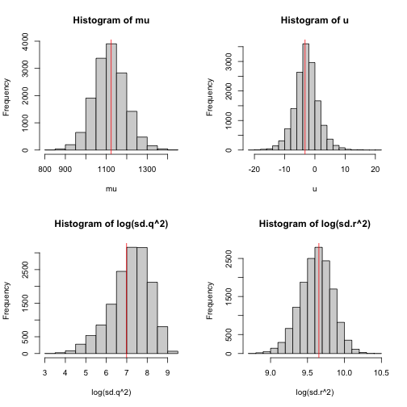
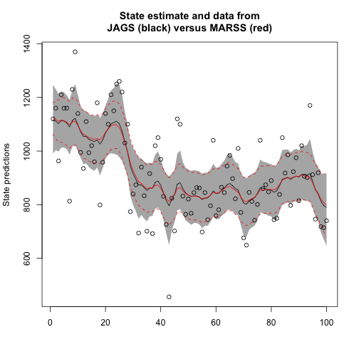

2.6 Fitting with JAGS
Here we show how to fit the stochastic level model, model 3 Equation (2.7), with JAGS. This is a model where the level is a random walk with drift and the Nile River flow is that level plus error.
library(datasets)
y <- as.vector(Nile)This section requires that you have JAGS installed and the {R2jags}, {rjags} and {coda} R packages loaded.
library(R2jags)
library(rjags)
library(coda)The first step is to write the model for JAGS to a file (filename in model.loc):
model.loc <- "ss_model.txt"
jagsscript <- cat("
model {
# priors on parameters
mu ~ dnorm(Y1, 1/(Y1*100)); # normal mean = 0, sd = 1/sqrt(0.01)
tau.q ~ dgamma(0.001,0.001); # This is inverse gamma
sd.q <- 1/sqrt(tau.q); # sd is treated as derived parameter
tau.r ~ dgamma(0.001,0.001); # This is inverse gamma
sd.r <- 1/sqrt(tau.r); # sd is treated as derived parameter
u ~ dnorm(0, 0.01);
# Because init X is specified at t=0
X0 <- mu
X[1] ~ dnorm(X0+u,tau.q);
Y[1] ~ dnorm(X[1], tau.r);
for(i in 2:TT) {
predX[i] <- X[i-1]+u;
X[i] ~ dnorm(predX[i],tau.q); # Process variation
Y[i] ~ dnorm(X[i], tau.r); # Observation variation
}
}
",
file = model.loc)Next we specify the data (and any other input) that the JAGS code needs. In this case, we need to pass in dat and the number of time steps since that is used in the for loop. We also specify the parameters that we want to monitor. We need to specify at least one, but we will monitor all of them so we can plot them after fitting. Note, that the hidden state is a parameter in the Bayesian context (but not in the maximum likelihood context).
jags.data <- list(Y = y, TT = length(y), Y1 = y[1])
jags.params <- c("sd.q", "sd.r", "X", "mu", "u")Now we can fit the model:
mod_ss <- jags(jags.data, parameters.to.save = jags.params, model.file = model.loc,
n.chains = 3, n.burnin = 5000, n.thin = 1, n.iter = 10000,
DIC = TRUE)We can then show the posteriors along with the MLEs from MARSS on top (Figure ?? ) using the code below.
attach.jags(mod_ss)
par(mfrow = c(2, 2))
hist(mu)
abline(v = coef(kem.3)$x0, col = "red")
hist(u)
abline(v = coef(kem.3)$U, col = "red")
hist(log(sd.q^2))
abline(v = log(coef(kem.3)$Q), col = "red")
hist(log(sd.r^2))
abline(v = log(coef(kem.3)$R), col = "red")MARSS() shown in red." alt="The posteriors for model 3 with MLE estimates from MARSS() shown in red." width="80%" style="display: block; margin: auto;" />
detach.jags()To plot the estimated states ( Figure ?? ), we write a helper function:
plotModelOutput <- function(jagsmodel, Y) {
attach.jags(jagsmodel)
x <- seq(1, length(Y))
XPred <- cbind(apply(X, 2, quantile, 0.025), apply(X, 2,
mean), apply(X, 2, quantile, 0.975))
ylims <- c(min(c(Y, XPred), na.rm = TRUE), max(c(Y, XPred),
na.rm = TRUE))
plot(Y, col = "white", ylim = ylims, xlab = "", ylab = "State predictions")
polygon(c(x, rev(x)), c(XPred[, 1], rev(XPred[, 3])), col = "grey70",
border = NA)
lines(XPred[, 2])
points(Y)
}plotModelOutput(mod_ss, y)
lines(kem.3$states[1, ], col = "red")
lines(1.96 * kem.3$states.se[1, ] + kem.3$states[1, ], col = "red",
lty = 2)
lines(-1.96 * kem.3$states.se[1, ] + kem.3$states[1, ], col = "red",
lty = 2)
title("State estimate and data from\nJAGS (black) versus MARSS (red)")